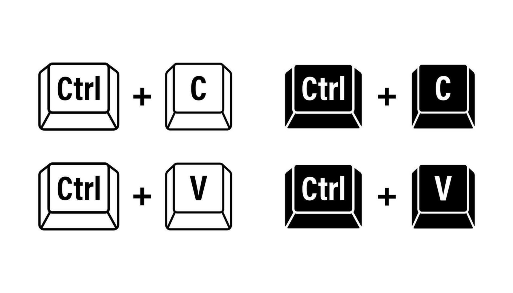
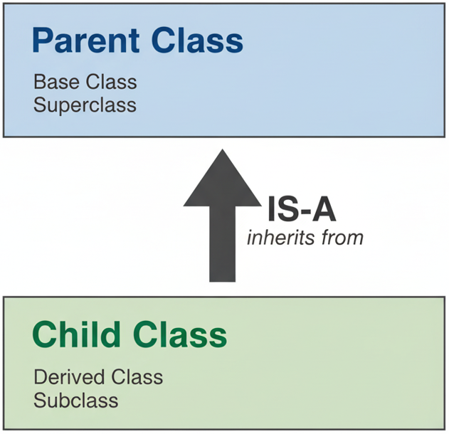

classDiagram
direction TD
%% Person is an abstract base class
class Person {
<<Abstract>>
-name: String
-birthday: Date
-ID: Integer
+knowRole() String
}
%% StaffMember inherits from Person
class StaffMember {
<<Abstract>>
+workOnRole()
}
Person <|-- StaffMember : inherits from
%% Specific Staff Roles
class Lecturer {
+teach()
+mark()
}
class TOMember {
+organizeTimeTable()
+processGrades()
}
class Demonstrator {
+assist()
+provideFB()
}
class SecurityGuard {
+assist()
+checkSafety()
}
StaffMember <|-- Lecturer : implements
StaffMember <|-- TOMember : implements
StaffMember <|-- Demonstrator : implements
StaffMember <|-- SecurityGuard : implements
%% Student inherits from Person
class Student {
<<Abstract>>
+workOnRole()
}
Person <|-- Student : inherits from
%% Specific Student Roles
class UGStudent {
+writeBScThesis()
}
class PGTStudent {
+writeMScThesis()
}
class PGRStudent {
+writePhDTHesis()
}
Student <|-- UGStudent : implements
Student <|-- PGTStudent : implements
Student <|-- PGRStudent : implements
%% Styling (Optional but helpful)
style Person fill:#f9f,stroke:#333,stroke-width:2px
style StaffMember fill:#bbf,stroke:#333
style Student fill:#bfb,stroke:#333
style Lecturer fill:#ddd,stroke:#333
style UGStudent fill:#ddd,stroke:#333
Inheritance
Khiem Nguyen
Lecturer in Multiscale Materials
khiem.nguyen@glasgow.ac.uk
Intro to inheritance
Intro to inheritance: Shapes
You want to build a software drawing various 2D Shapes: Rectangle, Square, Polygon, Circle, Ellipse, etc.
You can decide to build each class representing each particular shape. But you recognize “Wait a minute”:
- A
Squareis aRectangle - A
Rectangleis aPolygon - A
Circleis aELlipse - All of them is a
Shape
- A
Furthore, we notice
- A
Polygonhas a list ofPoint2D - A
Ellipsehas a center ofPoint2Dand has two two axis sizesaandbof typedouble. - A
Circleis similiar toEllipsebuta == b. - A
Rectanglehas a has a corner ofPoint2Dand two sizesaandbof typedouble - A
Squareis similar to aRectanglebuta == b.
- A
Intro to inheritance: Shapes
You notice that
- Drawing a square should be a consequence of drawing a rectangle with the same size.
- Drawing a rectangle should be a consequence of drawing a “special” polygon of 4 sides.
- Drawing a circle should be a consequence of drawing an ellipse
So why do we bother to build different classes separately!
Hierarchies
A hierarchy is a diagram showing how various objects are related.

Intro to inheritance: University People
If the above example cannot convince you enough, look at our University hierarchy.
A very small description about roles in our Uni
- Every member of staffs has a
name, abirthday, anID - Every student has a
name, abirthday, anID - There are different types of staff members:
Lecturer,TOMember,Demonstrator,SecurityGuard - There are different types of students:
UGStudent(undergraduate),PGTStudent(Post-graduate Taught) andPGRStudent(Post-graduate Research) - Every person in the Uni has their role and knows their role, work on their role.
➥ If you are about to create all the classes Lecturer, TOMember, Demonstrator, SecurityGuard, UGStudent, PGTStudent, PGRStudent, you see that you must [plug figure here] a lot for common data members and member functions.

This violates the principle designing rule: Do not repeat yourself
Intro to inheritance: How about the following design hierarchy
Basic inheritance in C++
Terminilogies
Terminilogy
✎ In an inheritance (is-a) relationship
- the class being inherited from: parent class, base class, or superclass
- the class doing the inheriting: derived class, derived class, or subclass

Basic inheritance in C++: Mini example
➥ We will adopt a smaller design structure:
- Every
Lectureris a aUniPerson - Every
Studentis a aUniPerson - Every
LecturerandStudenthasnameandID.
We shall discuss - work_on_role() later when we study Polymorphism and Virtual Function. - other member functions in Lecturer and Student when we study [adding more functionality] to derived class.
Basic inheritance in C++: Mini-diagram for code demonstration
classDiagram
direction LR
%% Person is an abstract base class
class UniPerson {
-name std::string
-ID int
-age int
+get_name() std::string
+get_ID() int
+get_age() int
}
%% class UniPerson
%% UniPerson : -name string
%% UniPerson : -ID int
%% UniPerson : -age int
%% Specific Staff Roles
class Lecturer {
- salary: double
+ get_salary() double
}
UniPerson <|-- Lecturer : inherits from
%% Student inherits from Person
class Student {
-tuition_fee: double
+get_tuition() double
}
UniPerson <|-- Student : inherits from
%% Styling (Optional but helpful)
%% style Person fill:#f9f,stroke:#333,stroke-width:2px
%% style Student fill:#bfb,stroke:#333
%% style Lecturer fill:#ddd,stroke:#333
Implementation of Inheritance: class UniPerson
➥ Let us look at the class UniPerson
UniPerson. Filename=uniperson.cpp
#include <string>
#include <string_view>
class UniPerson
{
private:
// This is shared by all Person objects
static int nextID;
std::string name{};
int ID {};
int age {};
public:
UniPerson(std::string_view name = "", int age = 0)
: name{ name }, age{ age }
{
// Assign the current counter and
// then increment it for the next object
ID = nextID++;
}
const std::string& get_name() const { return name; }
int get_age() const { return age; }
int get_id() const { return ID; }
};
int UniPerson::nextID{100000};Implementation of Inheritance: class Lecturer without inheritance
Lecturer without inheritance. Filename=lecturer_noinheritance.cpp
#include <string>
#include <string_view>
class Lecturer // non inheritance from UniPerson
{
static int nextID;
double salary;
std::string name;
int age;
int ID;
public:
Lecturer(std::string name, int age): name{name}, age {age}
{
// Assign the current counter and
// then increment it for the next object
ID = nextID++;
};
// we must copy + paste what we wrote for UniPerson
int age() { return age; }
const std::string& name() { return name; }
};
// you immediately see the problem here
// we just count the ID from all over again.
int Lecturer::nextID{10000}; ➥ Question Can you tell me what problem we have?
Implementation: class Lecturer inherited from class UniPerson
Lecturer inherited from class UniPerson. Filename=lecturer.h
#ifndef LECTURER_H
#define LECTURER_H
#include <string>
#include <string_view>
#include "uniperson.h"
class Lecturer : public UniPerson // non inheritance from UniPerson
{
private:
double salary;
// We can remove a lot of code here!!!
public:
Lecturer(std::string_view name = "", int age = 0, double salary = 42000):
UniPerson{name, age}, // we borrowed the constructor from UniPerson above
salary {salary}
{
};
double get_salary() const { return salary; }
// We can remove a lot of code for member functions here.
};
// We don't need this code anymore and it makes perfect sense.
// int Lecturer::nextID{10000};
#endifImpelemntation: Put two classes together into a main program
Lecturer derived from the class UniPerson Filename=main_uniperson_lecturer.cpp
#include <string>
#include <string_view>
#include <iostream>
class UniPerson
{
protected: // Protected so that Lecturer can see these
// This is shared by all Person objects
static int nextID;
std::string name{};
int ID {};
int age {};
public:
UniPerson(std::string_view name = "", int age = 0)
: name{ name }, age{ age }, ID {nextID++}
{
}
const std::string& get_name() const { return name; }
int get_age() const { return age; }
int get_id() const { return ID; }
};
int UniPerson::nextID{100000};
class Lecturer : public UniPerson // non inheritance from UniPerson
{
private:
double salary;
// We can remove a lot of code here!!!
public:
Lecturer(std::string_view name = "", int age = 0, double salary = 42000):
UniPerson{name, age}, salary {salary}
{
// we borrowed the constructor from UniPerson above
};
double get_salary() const { return salary; }
// We can remove a lot of code for member functions here.
};
// We don't need this code anymore and it makes perfect sense.
// int Lecturer::nextID{10000};
int main()
{
Lecturer khiem {"khiem", 42};
std::cout << "Khiem's age is " << khiem.get_age() << '\n';
std::cout << "Khiem's ID is " << khiem.get_id() << '\n';
Lecturer scott {"Scott", 101}; // his hair tells me that
std::cout << "Scott's age is " << scott.get_age() << '\n';
std::cout << "Scott's ID is " << scott.get_id() << '\n';
}➥ Notice that we can access age, id members although we did not define them explicitly in class Lecturer. Let us run the code.
Implementation: class Student
➥ It is now easy to write class Student derived from UniPerson
Student inherited from the class UniPerson Filename=student.h
#ifndef STUDENT_H
#define STUDENT_H
#include <string>
#include <string_view>
#include "uniperson.h"
class Student : public UniPerson // non inheritance from UniPerson
{
private:
double tuition;
// We can remove a lot of code here!!!
public:
Student(std::string_view name = "", int age = 0, double tuition = 42000):
UniPerson{name, age}, // we borrowed the constructor from UniPerson above
tuition {tuition}
{
};
double get_tuition() const { return tuition; }
// We can remove a lot of code for member functions here.
};
#endifImplementation: Put three classes together into a main program
Lecturer and Student derived from the class UniPerson Filename=main_uniperson_lecturer_student.cpp
#include <string>
#include <string_view>
#include <iostream>
class UniPerson
{
protected: // Protected so that Lecturer can see these
// This is shared by all Person objects
static int nextID;
std::string name{};
int ID {};
int age {};
public:
UniPerson(std::string_view name = "", int age = 0)
: name{ name }, age{ age }, ID {nextID++}
{
}
const std::string& get_name() const { return name; }
int get_age() const { return age; }
int get_id() const { return ID; }
};
int UniPerson::nextID{100000};
class Lecturer : public UniPerson // non inheritance from UniPerson
{
private:
double salary;
// We can remove a lot of code here!!!
public:
Lecturer(std::string_view name = "", int age = 0, double salary = 42000):
UniPerson{name, age}, salary {salary}
{
// we borrowed the constructor from UniPerson above
};
double get_salary() const { return salary; }
// We can remove a lot of code for member functions here.
};
class Student : public UniPerson // non inheritance from UniPerson
{
private:
double tuition;
// We can remove a lot of code here!!!
public:
Student(std::string_view name = "", int age = 0, double salary = 42000):
UniPerson{name, age}, tuition {tuition}
{
// we borrowed the constructor from UniPerson above
};
double get_tuition() const { return tuition; }
// We can remove a lot of code for member functions here.
};
// We don't need this code anymore and it makes perfect sense.
// int Lecturer::nextID{10000};
int main()
{
Lecturer khiem {"khiem", 42};
std::cout << "Khiem's ID is " << khiem.get_id() << '\n';
std::cout << "Khiem's salary is " << khiem.get_salary() << '\n';
Student peter_parker {"peter", 18}; // his hair tells me that
std::cout << "Peter's ID is " << peter_parker.get_id() << '\n';
std::cout << "Peter's tuition fee is " << peter_parker.get_tuition() << '\n';
}Inheritance chains
✎ We can comeback to our bigger diagram
UGStudent, PGTStudent and PGRStudent are all derived from class Student and thus we have inherintance chain
classDiagram
%% Person is an abstract base class
class UniPerson {
}
class Lecturer {
}
class Student {
}
UniPerson <|-- Student : inherits from
class PGTStudent {
}
class UGStudent {
}
UniPerson <|-- Lecturer : inherits from
Student <|-- UGStudent: inherits from
Student <|-- PGTStudent: inherits from
Student <|-- PGRStudent: inherits from
%% Styling (Optional but helpful)
style UniPerson fill:#f9f,stroke:#333,stroke-width:2px
style Student fill:#bfb,stroke:#333
style Lecturer fill:#ddd,stroke:#333
➥ We will write a class for UGStudent.
➥ Instead of writing everything all the classes in one single giant filet, let us do this in multiple header files, which is the next topic.
Split the program into header files and implementation files
Goals of this example
✎ We go through the steps that need to be done to build a program that needs implementation of many classes.
- Write header files (
filename.horfilename.hpp) for each class - Write implementation files (
filename.cpp) for the corresponding class - Compile the main program using the
.cppfiles.
We build four classes and one main program. Each class is done by one header file .h and one implementation file .cpp:
- class
UniPerson - class
Lecturerinherits fromUniPerson - class
Studentinherits fromUniPerson - class
UGStudentinherits fromStudent
class UniPerson: Header file
UniPerson Filename=uni-program/uniperson.h
#ifndef UNIPERSON_H
#define UNIPERSON_H
#include <string>
#include <string_view>
class UniPerson
{
private:
// This is shared by all Person objects
static int nextID;
std::string name{};
int ID {};
int age {};
public:
// forward declare everything here
UniPerson(std::string_view name = "", int age = 0);
const std::string& get_name() const;
int get_age() const;
int get_id() const;
};
#endifclass UniPerson: Implementation file
UniPerson Filename=uni-program/uniperson.cpp
#include "uniperson.h"
int UniPerson::nextID{100000}; // Static initialization here only!
UniPerson::UniPerson(std::string_view n, int a)
: name{n}, age{a}, ID{nextID++}
{}
const std::string& UniPerson::get_name() const {
return name;
}
int UniPerson::get_age() const {
return age;
}
int UniPerson::get_id() const {
return ID;
}class Lecturer: Header file
Lecturer Filename=uni-program/lecturer.h
#ifndef LECTURER_H
#define LECTURER_H
#include <string>
#include <string_view>
#include "uniperson.h"
class Lecturer : public UniPerson // non inheritance from UniPerson
{
private:
double salary;
// We can remove a lot of code here!!!
public:
Lecturer(std::string_view name = "", int age = 0, double salary = 42000);
double get_salary() const;
};
#endifclass Lecturer: Implementation file
class Student: Header file
Student Filename=uni-program/student.h
#ifndef STUDENT_H
#define STUDENT_H
#include <string>
#include <string_view>
#include "uniperson.h"
class Student : public UniPerson // non inheritance from UniPerson
{
private:
double tuition;
// We can remove a lot of code here!!!
public:
Student(std::string_view name = "", int age = 0, double tuition = 42000);
double get_tuition() const;
};
#endifclass Student: Implementation file
class UGStudent: Header file
UGStudent Filename=uni-program/ugstudent.h
class UGStudent: Implementation file
UGStudent Filename=uni-program/ugstudent.cpp
#include <iostream>
#include "ugstudent.h"
// Remember: No default arguments here!
UGStudent::UGStudent(std::string_view name, int age, double tuition)
: Student{name, age, tuition} {}
void UGStudent::write_BSc_thesis() const {
std::cout << "Student (ID: " << get_id() << ") is writing the thesis" << std::endl;
}Order of construction of derived classes
In this lesson, we take a closer look at the order of construction that happens when a derived class is instantiated.
Order of constructors
➥ Let us look at this simple code involving two classes
Base and Derived which inherits from Base. Filename=base_and_derived.cpp
class Base
{
public:
int id {};
Base(int id=0)
: id { id }
{
}
int get_id() const { return id; }
};
class Derived: public Base
{
public:
double value {};
Derived(double value=0.0)
: value { value }
{
}
double get_value() const { return value; }
};
int main()
{
Base base{ 42 };
Derived derived { 42.24 };
return 0;
}Order of construction of derived classes: Diagram
The diagram of the above code snippet is easy:
classDiagram
direction TD
class Base {
-parent_value double
+get_parent_value() double
}
class Derived {
-child_value double
+get_child_value() double
}
Base <|-- Derived
%% Styling (Optional but helpful)
style Base fill:#f9f,stroke:#333,stroke-width:2px
style Derived fill:#bbf,stroke:#333
✎ The members of Base are not copied into Derived.
✎ Instead, we can consider Derived and Base as a two-part class: one part Derived + one part Base
Order of construction of derived classes: A closer look
Base class is executed before the constructor of the Derived class. Filename=parent_and_child_with_main.cpp
#include <iostream>
class Base
{
public:
int id {};
Base(int id=0)
: id { id }
{ std::cout << "Base object is constructed!\n"; }
int get_id() const { return id; }
};
class Derived: public Base
{
public:
double value {};
Derived(double value=0.0)
: value { value }
{ std::cout << "Derived object is constructed!\n"; }
double get_value() const { return value; }
};
int main ()
{
std::cout << "Instantiating a Parent object!\n";
Base parent;
std::cout << "===============================\n";
std::cout << "Instantiating a Derived object!\n";
Derived child;
return 0;
}➥ The constructor of Base class is executed before the constructor of Derived class is excuted when a Derived object is created.
Order of construction for inheritance chains
➥ Let us look at this example
classDiagram
direction LR
class A {
}
class B {
}
class C {
}
class D {
}
A <|-- B
B <|-- C
C <|-- D
%% Styling (Optional but helpful)
style A fill:#f9f,stroke:#333,stroke-width:2px
style B fill:#bbf,stroke:#333
style C fill:#bbf,stroke:#333
style D fill:#bbf,stroke:#333
Question If I create an object of class D, what would you expect to be executed?
✎ The above idea/knowledge applies naturally to inheritance chains:
- the great grandparent
Aconstructor is executed, then - the grandparent
Bconstructed is executed, then - the parent
Cconstructor is executed, and then - the derived
Dconstructor is executed.
Order of construction for inheritance chains: Code demonstration
inheritance_chain_four_classes.cpp
#include <iostream>
class A
{
public:
A() { std::cout << "\tConstructor of A\n"; }
};
class B: public A
{
public:
B() { std::cout << "\tConstructor of B\n"; }
};
class C: public B
{
public:
C() { std::cout << "\tConstructor of C\n"; }
};
class D: public C
{
public:
D() { std::cout << "\tConstructor of D\n"; }
};
int main()
{
std::cout << "Constructing A: \n";
A a;
std::cout << "Constructing B: \n";
B b;
std::cout << "Constructing C: \n";
C c;
std::cout << "Constructing D: \n";
D d;
}Constructors and initialization of derived classes
✎ In Python, we can use super() to access the parent’s data and member functions.
✎ Thus, we can write super().__init__(self,...) to use the constructor of the parent class.
class UniPerson:
nextID = 10000 # class variable
def __init__(self, name="", age=18):
self.name, self.age = name, age
self.id = UniPerson.nextID
UniPerson.nextID += 1
class Lecturer(UniPerson):
def __init__(self, name="", age=18):
super().__init__(name, age)
print(f"Lecturer {self.name} is recruited.")➥ This will be the topic of this lesson.
Revisit Python example
class UniPerson:
nextID = 10000 # class variable, functioning like static int nextID in C++
def __init__(self, name="", age=18):
self.name, self.age = name, age
self.id = UniPerson.nextID; UniPerson.nextID += 1 # fit into the slide
class Lecturer(UniPerson):
def __init__(self, name="", age=18):
super().__init__(name, age)
print(f"Lecturer {self.name} is recruited.")
def __str__(self): # print out the name of the lecturer
return self.name
khiem = Lecturer("Khiem", 42)
print(f"ID assigned for {khiem}: {khiem.id}")Lecturer Khiem is recruited.
ID assigned for Khiem: 10000Initialization involving inheritance: A problem example
➥ Look at this simple example
initialization_of_derived_class.cpp
class Base
{
public:
int id {};
Base(int id=0) : id{ id } {}
int get_id() const { return id; }
};
class Derived: public Base
{
public:
double value {};
Derived(double value=0.0) : value{ value } {}
double get_value() const { return value; }
};
int main()
{
// With non-derived classes, constructors only have to worry about
// their own members.
Base parent { 42 }; // use Base(int) constructor
// How about the the "id" member that child inherits from Base?
Derived child { 42.24 }; // use Derived(double) constructor
return 0;
}Initialization: Looking at Base class
What happens when Base is instantiated:
- Memory for base class (
Base) is set aside. - Appropriate
Baseconstructor is called. - Member initializer list initializes variables
- Body of constructor executes.
- Control is returned to the caller.
Initialization: Looking at Derived class
What happens when Derived is instantiated:
- Memory for derived class (
Derived) is set aside. - Appropriate
Derivedconstructor is called. Baseobject is constructed first using the pappropriateBaseconstructor. If no parent constructor is specified, the default constructor will be used.- Member initializer list initializes variables.
- Body of the constructor executes.
- Control is returned to the caller.
Question
- How about the
idmember that aDerivedobject inherits fromBase? - How can we initialize it when we create an object of
Derivedclass.
Initializing base class members: Approach 01
class Derived: public Base
{
public:
double cost {};
Derived(double value=0.0, int id=0)
: value { value }, id { id } // this won't work
{}
double get_cost() const { return cost; }
};✎ The value of a member variable can only be set in a member initializer list of a constructor belonging to the same class as the variable. ➜ This attempt won’t work. See and run initialization_of_derived_class_approach_01.cpp
Question What else can we do?
Initializing base class members: Approach 02
class Derived: public Base
{
public:
double cost {};
Derived(double value=0.0, int id=0)
: value { value }
{ // this work but not work for a const or a reference
this->id = id;
}
double get_cost() const { return cost; }
};➥ This approach works. See and run initialization_of_derived_class_approach_02.cpp. But
- would not work if
idwere a const or a reference. const values and references have to be initialized in the member initializer list of the constructor. - inefficient. Member
idgets assigned a value twice: once in the member initializer list ofBaseclass constructor, and then again in the body of theDerivedclass.
Initializing base class members: Call parent class constructor
✎ C++ allows us to explicitly choose which Base (Base) class constructor will be called! Simply add a call to the Base class constructor.
class Derived: public Base
{
public:
double value {};
Derived(double value=0.0, int id=0)
: Base{ id } // call Base(int) constructor with value id!!!
, value{ value }
{ } // constructor body
double get_value() const { return value; }
};➜ This resolves the troubles we have above.
Initializing base class members: Put things together
➥ Let us run the code snippet
initialization_of_derived_class_base_constructor.cpp
#include <iostream>
class Base
{
public:
int id {};
Base(int id=0) : id{ id } {}
int get_id() const { return id; }
void print() const {
std::cout << "Base:\n\tId: " << id;
}
};
class Derived: public Base
{
public:
double value {};
Derived(double value=0.0, int id=0)
: Base{ id }, value{ value } {}
double get_value() const { return value; }
void print() const { // this will override void Base::print()
std::cout << "Derived:\n\tId: " << id << '\n';
std::cout << "\tValue: " << value;
}
};
int main()
{
Base base{ 4224 };
base.print();
Derived derived{ 42, 24 };
derived.print();
std::cout << '\n';
return 0;
}Initializing base class members: UniPerson and Student
Homework
Think about rewriting Student so that we can call UniPerson’s constructor in the member initializer list of Student
Inheritance chains
➥ Let us apply the concept we have learned to inheritance chain
initializing_base_members_inheritance_chain.cpp
#include <iostream>
class A
{
public:
A(int a) {
std::cout << "A: " << a << '\n';
}
};
class B: public A
{
public:
B(int a, double b) : A{ a } {
std::cout << "B: " << b << '\n';
}
};
class C: public B
{
public:
C(int a, double b, char c) : B{ a, b } {
std::cout << "C: " << c << '\n';
}
};
int main()
{
C c{ 5, 4.3, 'R' };
return 0;
}Question What’s the output on the console?
Destructors
✎ When a derived class is destroyed, each destructor is called in the reverse order of construction.
➜ In the above example, when c is destroyed, the C destructor is called first, then the B destructor, then the A destructor.
Inheritance and access specifiers
We have learned two access specifiers:
- private
- public
We have also seen the access specifier protected.
𘱉 We will learn more about how access specifiers interact with inheritance in this lesson.
The protected access specifier
✎ The access specifier protected is only useful in an inheritance context.
- The
protectedaccess specifier allows the class the member belongs to, friends, and derived classes to access the member. protectedmembers are not accessible from outside the class.
Access specifiers in inheritance: Code illustration
initializing_base_members_inheritance_chain.cpp
#include <iostream>
class A
{
public:
A(int a) {
std::cout << "A: " << a << '\n';
}
};
class B: public A
{
public:
B(int a, double b) : A{ a } {
std::cout << "B: " << b << '\n';
}
};
class C: public B
{
public:
C(int a, double b, char c) : B{ a, b } {
std::cout << "C: " << c << '\n';
}
};
int main()
{
C c{ 5, 4.3, 'R' };
return 0;
}When should we use the protected access specifier
Discuss briefly in the lecture. ➜ Students need to read these points carefully again.
With a
protectedattribute in a base class, derived classes can access that member directly. ➜ If we later change anything about theprotectedattribute (type, value meaning, etc.), we’ll probably need to change both the base class and all of the derived classes.Using the
protectedaccess specifier is most useful when- we (and our team) are going to be the ones deriving from our own classes
- number of derived classes is reasonable
Making members private is good for insulating the public or derived classes from implementation changes, and for ensuring invariants (fractions must have non-zero denominators) are maintained properly.
Think about the open-source code and you made member protected. Other developers can access the members and spoil them.
This implies our class need a larger public (or protected) interface to support all of the functions that public or derived classes need for operation (high cost to build and maintain)
It’s better to make your members private if we can, and only use
protectedwhen derived classes are planned and the cost to build and maintain an interface to those private members is too high.
When should we use the protected access specifier
Important
Best practice
Favor private members over protected members.
Different kinds of inheritance, and their impact on access
✎ There are three different ways for classes to inherit from other classes: public, protected, private
✎ We have \(9\) combinations: \(3\) member access specifiers and 3 inheritance types.
Different kinds of inheritance, and their impact on access
➥ Some remarks
- It is not that I cannot teach this component carefully in the live lecture.
- I think we will get confused and forget most of the explained cases right after leaving the classroom.
- The point is to make you aware of these concepts and give you an opportunity to learn them deeper.
➥ Therefore, I write down some keypoints and skip the slides. Students should read the materials later.
Tip
Key rules to interpret different combinations
- A class can always access its own (non-inherited) members.
- The public accesses the members of a class based on the access specifiers of the class it is accessing.
- A derived class accesses inherited members based on the access specifier inherited from the parent class. This varies depending on the access specifier and type of inheritance used.
public inheritance
publicinheritance is by far the most commonly used type of inheritance.- Very rarely will we see or use the other types of inheritance.
| Access specifier in base class | Access specifier when inherited publicly |
|---|---|
| Public | Public |
| Protected | Protected |
| Private | Inaccessible |
protected inheritance
protectedinheritance is the least common method of inheritance.- It is almost never used, except in very particular cases.
- With
protectedinheritance, thepublicandprotectedmembers becomeprotected, andprivatemembers stay inaccessible.
| Access specifier in base class | Access specifier when inherited protectedly |
|---|---|
| Public | Protected |
| Protected | Protected |
| Private | Inaccessible |
private inheritance
- With
privateinheritance, all members from the base class are inherited asprivate. privatemembers are inaccessible, andprotectedandpublicmembers becomeprivate.
| Access specifier in base class | Access specifier when inherited privately |
|---|---|
| Public | Private |
| Protected | Private |
| Private | Inaccessible |
Access specifier in inheritance: Summary
| Base Class Member | Public Inheritance | Protected Inheritance | Private Inheritance |
|---|---|---|---|
| Public | Public | Protected | Private |
| Protected | Protected | Protected | Private |
| Private | Inaccessible | Inaccessible | Inaccessible |
Adding new functionality to a derived class
✎ One of the biggest benefits of inheritance is the ability to reuse written code.
✎ We can add new functionality, modifying existing functionality, or hide functionality if we don’t want.
We have learned these concepts from Introductory Programming 2 and also in several last examples. ➜ No need to go into too much details.
Adding new functionality to a derived class: Code illustration
add_functionality_example.cpp
#include <iostream>
class Base
{
protected:
int id {};
public:
Base() = default; // we need default constructor here, see Derived class
Base(int id): id { id }{}
void identify() const { std::cout << "I am a Base. ID = " << id << '\n'; }
};
class Derived : public Base
{
double value;
public:
Derived(double value) : value {value} {} // no id argument
Derived(double value, int id) : Base{id}, value {value} {}
double get_value() const { return value; }
void print() const {
std::cout << "ID: " << id << ", value: " << value;
}
};
int main()
{
Derived d1 { 42.0 };
Derived d2 { 24.0, 42 };
d1.identify();
d2.identify();
d1.print(); std::cout << '\n';
d2.print(); std::cout << '\n';
return 0;
}➥ Let us run it and go through it slowly.
Adding new functionality: An example using std::vector
add_functionality_example_vector.cpp
#include <iostream>
#include <vector>
class Base
{
protected:
int id {};
public:
Base() = default; // we need default constructor here, see Derived class
Base(int id): id { id }{}
void identify() const { std::cout << "I am a Base. ID = " << id << '\n'; }
};
class Derived : public Base
{
double value {};
public:
Derived() = default;
Derived(double value) : value {value} {} // no id argument
Derived(double value, int id) : Base{id}, value {value} {}
double get_value() const { return value; }
void print() const {
std::cout << "ID: " << id << ", value: " << value;
}
};
int main()
{
std::vector<Derived> list;
list.push_back(Derived {42.0, 24});
list.push_back(Derived {24.0, 42});
list.push_back(Derived {});
for (auto element : list) {
element.print();
std::cout << '\n';
}
return 0;
}➥ Let us run it and go through it slowly.
Calling inherited functions and overriding behavior
✎ By default, derived classes inherit all of the behaviors defined in a base class.
✎ We now examine in more detail how member functions are selected, as well as how we can leverage this to change behaviors in a derived class.
Note
- Most of us have learned all these concepts in Introductory Programming 2 and Mechanical Engineering Skills 3.
- It does not harm to quickly go through them again. Well, people can forget 😃 😃.
Calling a base class function
✎ Since the derived class inherits members of its base class, it can use them (need access specifier public or protected in base class).
call_base_class_function.cpp
➥ Let us run this code snippet.
Redefining behaviors
✎ However, if we had defined Derived::identify() in the Derived class, it would have been used instead.
call_base_class_function.cpp
#include <iostream>
class Base
{
public:
Base() { }
void identify() const { std::cout << "Base::identify()\n"; }
};
class Derived: public Base
{
public:
Derived() { }
void identify() const { std::cout << "Derived::identify()\n"; }
};
int main()
{
Base base {};
base.identify();
Derived derived {};
derived.identify();
return 0;
}Adding to existing functionality
✎ Sometimes we do not want to completely replace a base class function, but instead want to add additional functionality to it when called with a derived object.
add_to_existing_functionality.cpp
#include <iostream>
class Base
{
public:
Base() { }
void identify() const { std::cout << "Base::identify()\n"; }
};
class Derived: public Base
{
public:
Derived() { }
void identify() const
{
std::cout << "Derived::identify()\n";
Base::identify(); // note call to Base::identify() here
}
};
int main()
{
Base base {};
base.identify();
Derived derived {};
derived.identify();
return 0;
}Change an inherited member’s access level and hide inherited functionality
✎ Change an inherited member’s access
C++ gives us the ability to change an inherited member’s access specifier in the derived class.
✎ Hide functionality
In a derived class, it is possible to hide functionality that exists in the base class, so that it can not be accessed through the derived class.
We can do both with using declaration.
We skip this component. The students can learn it at home.
Change an inherited member’s access level: make public
✎ C++ gives us the ability to change an inherited member’s access specifier in the derived class, by a using declaration – Let us run this code snippet:
using declaration we can change the access level of derived class’ members. Filename=change_inherited_member_access_level.cpp
#include <iostream>
class Base
{
private:
int id {};
public:
Base(int id) : id {id} {}
protected:
void print_id() const { std::cout << "ID: " << id; }
};
class Derived: public Base
{
private:
double value {};
public: // note this public, everything below this is public now
Derived(double value, int id) : Base {id}, value {value} {}
double get_value() const { return value; }
//Base::print_id() was inherited as protected, so the public has no access.
// But we are changing it to public via a using declaration
using Base::print_id; // note: no parenthesis here
};
int main()
{
Derived d {24.42, 42};
d.print_id(); // prints 7
std::cout << ", d.value: " << d.get_value() << '\n';
}Change an inherited member’s access level: hide functionality (make private)
✎ In a derived class, it is possible to hide functionality that exists in the base class, so that it can not be accessed through the derived class – Let us play around this code snippet:
using declaration we can also high functionality that exists in the base class. Filename=hide_functionality.cpp
#include <iostream>
class Base
{
public:
int id {};
public:
double public_mem {}; // this is a public member
Base(int id) : id {id} {}
protected:
void print_id() const { std::cout << "ID: " << id; }
};
class Derived: public Base
{
private:
double value {};
using Base::public_mem; // this is now private in Derived.
public: // note this public, everything below this is public now
Derived(double value, int id) : Base {id}, value {value} {}
double get_value() const { return value; }
using Base::print_id; // this is now public to the outside world
};
int main()
{ Base b { 42 };
std::cout << "b.public_mem: " << b.public_mem << '\n'; // This is OK
Derived d {24.42, 42};
// std::cout << d.public_mem; // ERROR: public_mem is private in Derived
}Change an inherited member’s access level: Summary
✎ With using declaration, we can change an inherited member’s access level
- make the
memberinDerivedclasspublicby declaringusing Base::member;below access specifierpublic: - hide the
memberinBasedclass by declaringusing Base::membe;below access specifierprivate:
Deleting functions in derived class
✎ We can mark member functions as deleted in the derived class, ensuring they cannot be called at all though a derived object.
delete a function inherited from the base class in the derived class. This function cannot be called at all through a derived object. Filename=delete_functions_in_derived.cpp
#include <iostream>
class Base
{
private:
int id {};
public:
Base(int id) : id { id } { }
int get_id() const { return id; }
void print_base() const {
std::cout << "Base object with id: " << id;
}
};
class Derived : public Base
{
double value {};
public:
Derived(double value, int id) : Base {id}, value {value} {}
double get_value() const { return value; };
// it does not make sense to print a Derived-type object
// using the print_base() for a Base-type object
void print_base() const = delete; // mark this function as inaccessible
};
int main()
{
Derived derived { 42.24, 42 };
std::cout << derived.get_id() << '\n'; // this is fine.
// ERROR: This function has been deleted in Derived
// std::cout << derived.print_base();
return 0;
}Multiple inheritance
✎ Multiple inheritance enables a derived class to inherit members from more than one parent.
Note
- Again, I expect that most of us (students) have learned all these concepts in Introductory Programming 2 and Mechanical Engineering Skills 3.
- However, I can acknowledge that maybe many of you have not heard about this.
Multiple inheritance: Smartphone – A Concept hierarchy
➥ Let us think of this example
Camera: provides the ability totake_photo()Phone: provides the ability tomake_call()Smartphone: inherits from both, allowing it to perform both actions.
Multiple inherintance: Smartphone – Code
SmartPhone inherits both members from Camera and Phone. Filename=multiple_inheritance_smartphone.cpp
#include <iostream>
class Camera {
public:
void take_photo() {
std::cout << "Taking a photo!" << std::endl;
}
};
class Phone {
public:
void make_call() {
std::cout << "Making a phone call!" << std::endl;
}
};
// Multiple Inheritance
class SmartPhone : public Camera, public Phone {
// Inherits members from both Camera and Phone
// add more functionality to phone
void use_app(std::string app_name) {
std::cout << app_name << "is being used.\n";
}
};
int main() {
SmartPhone my_phone;
my_phone.take_photo();
my_phone.make_call();
return 0;
}